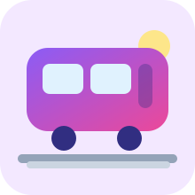

Trajeto do dia
Chegar até Vila Sônia
Toque nas etapas conforme for avançando. Tudo foi pensado para usar no celular e continuar funcionando sem internet.
Preparando offline...
0/5 etapas

Progresso da missão
Começando a aventuraMapa simples
Toque nas bolinhas para focar
Dica importante
Fique tranquilo 😊
- Confira o nome da estação antes de sair do trem.
- Na troca Consolação → Paulista, siga as placas amarelas.
- Se ficar em dúvida, mostre este site para um funcionário do metrô.